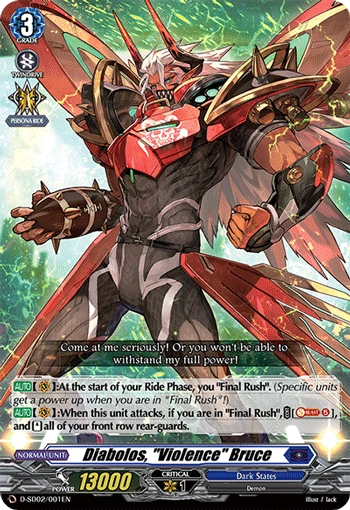
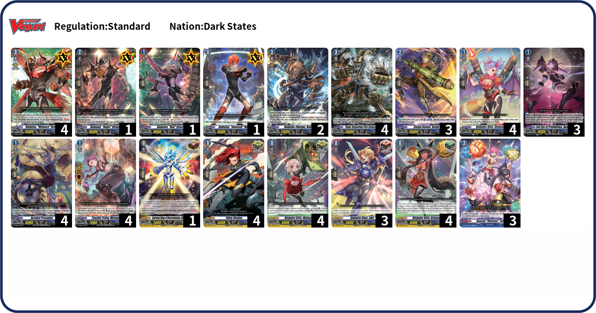

Who is Diabolos "Violence", Bruce?

"Leader of Team “Diabolos”. A warmongering demon polished by hundreds of battles. His name resounds within Planet Cray even among mobsters from outside the Gallows Bowl. Brings his brothers (teammates) together with his overwhelming manliness and obstinacy."

Deck Code: BVT2
"Final Rush" is Bruce's specialty. After the turn Bruce is placed, his "Final Rush" is activated, which activates a myriad of your vanguard or your rear-guard's skills. Unlike Nirvana, with just cheap support, Bruce gets a lot of tools to play with. The added commons are either better versions of cards in the Start Deck (Stephanie or Flinty Slasher), cards that help you stay on the game for your "Final Rush" (Special "Violence" Yell), or are cards that add other ways for the deck to win or gain advantage (Nate or Quen Lu). Make use of "Final Rush" to end the game in one fell swoop!